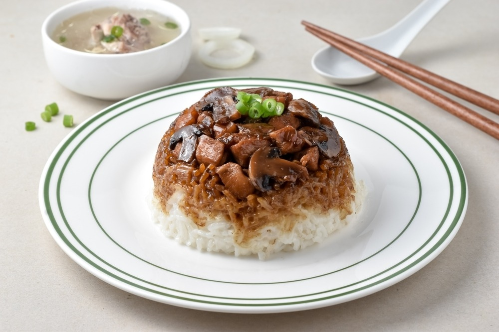

Resep Nasi Tim
Resep Nasi Tim

Bahan 1:
- ¼ ekor Ayam, bagian paha
- 1.250 ml Air
- 1 sdt Ladaku Merica Bubuk
- 1 sdt Garam
- 1 batang Daun Bawang, dipotong-potong
Bahan 2:
- 3 sdm Minyak Goreng
- 3 siung Bawang Putih, cincang
- 2 cm Jahe, dimemarkan
- 2 batang Daun Bawang, dirajang
Bahan 3:
- 2 sdm Kecap Manis
- 1 sdm Kecap Asin
- 1 sdm Kecap Inggris
- 1 sdm Saus Tiram
Bahan 4:
- 1 sdt Gula Pasir
- ¼ sdt Ladaku Merica Bubuk
- 350 g Nasi Putih
- 1 sdm Minyak Wijen
- 2 sdm Bawang Goreng
- 25 g Daun Ketumbar
Cara membuat:
- Rebus bahan 1 hingga mendidih kemudian kecilkan api, rebus kembali selama 45 menit dengan panci tertutup
- Kemudian angkat ayam dan potong dadu, sisihkan potongan ayam ini
- Sisihkan juga kaldu dari rebusan ayam
- Tumis bawang putih, jahe dan daun bawang, sampai bawang putih mulai kekuningan
- Campur semua bahan 3 ke dalam wadah, aduk lalu masukkan ke dalam tumisan, masak hingga mulai harum dan kuah pekat
- Tambahkan Ladaku Merica Bubuk dan gula pasir, aduk hingga gula larut
- Masukkan ayam rebus yang sudah dipotong dadu
- Matikan api, masukkan minyak wijen, aduk kembali hingga rata
- Letakkan tumisan ayam secukupnya pada dasar mangkok tahan panas
- Beri nasi hampir 60% memenuhi mangkok
- Tuangi dengan kaldu ayam hingga nasi terendam, lakukan kembali hingga bahan habis
- Kukus selama 35 menit hingga nasi menjadi nasi tim
- Angkat kemudian balik mangkok nasi tim di atas piring
- Sajikan selagi masih panas dengan taburan bawang goreng dan daun ketumbar
Link video: